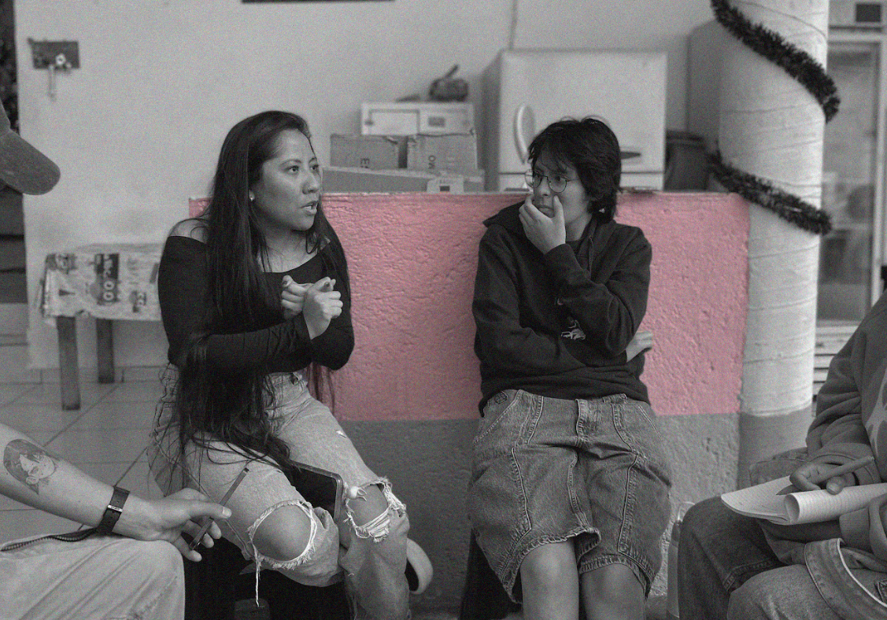
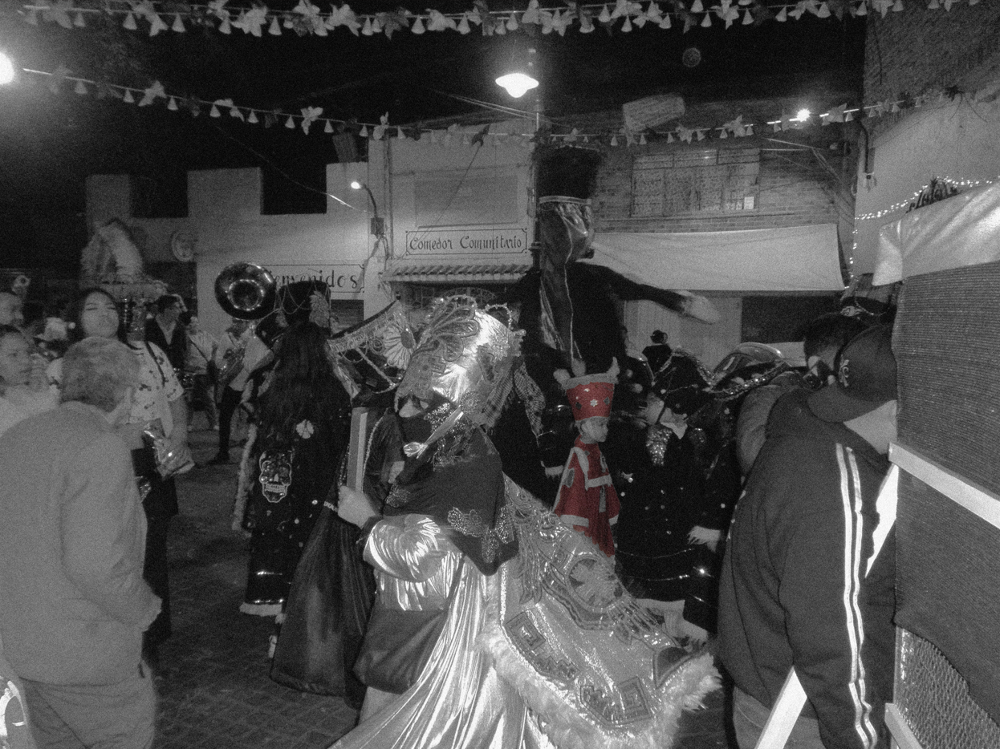

Xipil
XIPIL es un proyecto que busca integrar las historias, practicas y simbolos del pueblo de San Sebastian Xoco, proponiendo alternativas que documenten y transformen el papel de los signos culturales en la resistencia, preservacion y revalorizacion de su identidad y patrimonio cultural.

San Sebastian Xoco
San Sebastian Xoco es un pueblo originario ubicado en el centro-sur de la alcaldia Benito Juarez, en la Ciudad de Mexico. Su historia se remonta a epocas prehispanicas, con vestigios arqueologicos que indican asentamientos teotihuacanos entre los anos 225 y 550 d.C. Durante el periodo colonial, se construyo la capilla de San Sebastian Martir en 1663, la cual sigue siendo un punto central en la vida comunitaria.

Contexto Actual
A pesar de la urbanizacion y el desarrollo de megaproyectos como la Torre Mitikah, la comunidad de Xoco ha mantenido vivas sus tradiciones, celebraciones y estructura social. Sin embargo, enfrenta desafios significativos debido a la gentrificacion y la transformacion del paisaje urbano, lo que ha generado tensiones entre los habitantes y los desarrolladores inmobiliarios.
/XOCO.png)